Robots
Robot
EffectorSensor
Robots are physical agents that perform tasks by manipulating the physical world. To do
so, they are equipped with effectors such as legs, wheels, joints, and grippers. Effectors are
designed to assert physical forces on the environment. When they do this, a few things may
happen: the robot’s state might change (e.g., a car spins its wheels and makes progress on the
road as a result), the state of the environment might change (e.g., a robot arm uses its gripper
to push a mug across the counter), and even the state of the people around the robot might
change (e.g., an exoskeleton moves and that changes the configuration of a person’s leg; or
a mobile robot makes progress toward the elevator doors, and a person notices and is nice
enough to move out of the way, or even push the button for the robot).Robots are also equipped with sensors, which enable them to perceive their environment.
Present-day robotics employs a diverse set of sensors, including cameras, radars, lasers, and
microphones to measure the state of the environment and of the people around it; and gyro-
scopes, strain and torque sensors, and accelerometers to measure the robot’s own state.Maximizing expected utility for a robot means choosing how to actuate its effectors to
assert the right physical forces—the ones that will lead to changes in state that accumulate as
much expected reward as possible. Ultimately, robots are trying to accomplish some task in
the physical world.Robots operate in environments that are partially observable and stochastic: cameras
cannot see around corners, and gears can slip. Moreover, the people acting in that same
environment are unpredictable, so the robot needs to make predictions about them.Robots usually model their environment with a continuous state space (the robot’s po-
sition has continuous coordinates) and a continuous action space (the amount of current a
robot sends to its motor is also measured in continuous units). Some robots operate in high-
dimensional spaces: cars need to know the position, orientation, and velocity of themselves
and the nearby agents; robot arms have six or seven joints that can each be independently
moved; and robots that mimic the human body have hundreds of joints.Robotic learning is constrained because the real world stubbornly refuses to operate faster
than real time. In a simulated environment, it is possible to use learning algorithms (such as
the Q-learning algorithm described in Chapter 23) to learn in a few hours from millions of
trials. In a real environment, it might take years to run these trials, and the robot cannot risk
(and thus cannot learn from) a trial that might cause harm. Thus, transferring what has beenSection 26.2 Robot Hardware 933
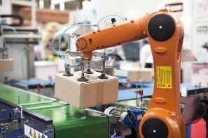
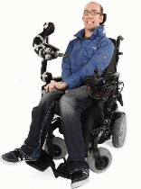
(a) (b)
Figure 26.1 (a) An industrial robotic arm with a custom end-effector. Image credit: Ma-
cor/123RF. (b) A Kinova® JACO® Assistive Robot arm mounted on a wheelchair. Kinova
and JACO are trademarks of Kinova, Inc.learned in simulation to a real robot in the real world—the sim-to-real problem—is an active
area of research. Practical robotic systems need to embody prior knowledge about the robot,
the physical environment, and the tasks to be performed so that the robot can learn quickly
and perform safely.Robotics brings together many of the concepts we have seen in this book, including prob-
abilistic state estimation, perception, planning, unsupervised learning, reinforcement learn-
ing, and game theory. For some of these concepts robotics serves as a challenging example
application. For other concepts this chapter breaks new ground, for instance in introducing
the continuous version of techniques that we previously saw only in the discrete case.Robot Hardware
So far in this book, we have taken the agent architecture—sensors, effectors, and processors—
as given, and have concentrated on the agent program. But the success of real robots depends
at least as much on the design of sensors and effectors that are appropriate for the task.Types of robots from the hardware perspective
When you think of a robot, you might imagine something with a head and two arms, moving
robot
around on legs or wheels. Such anthropomorphic robots have been popularized in fiction Anthropomorphic
such as the movie The Terminator and the cartoon The Jetsons. But real robots come in many
shapes and sizes.Manipulators are just robot arms. They do not necessarily have to be attached to a robot Manipulator
body; they might simply be bolted onto a table or a floor, as they are in factories (Figure 26.1
(a)). Some have a large payload, like those assembling cars, while others, like wheelchair-
mountable arms that assist people with motor impairments (Figure 26.1(b)), can carry less
but are safer in human environments.934 Chapter 26 Robotics
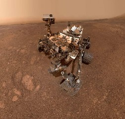
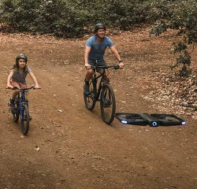
(a) (b)
Figure 26.2 (a) NASA’s Curiosity rover taking a selfie on Mars. Image courtesy of NASA.
(b) A Skydio drone accompanying a family on a bike ride. Image courtesy of Skydio.
Mobile robot
Quadcopter droneMobile robots are those that use wheels, legs, or rotors to move about the environment.
Quadcopter drones are a type of unmanned aerial vehicle (UAV); autonomous underwa-
UAV ter vehicles (AUVs) roam the oceans. But many mobile robots stay indoors and move on
AUV wheels, like a vacuum cleaner or a towel delivery robot in a hotel. Their outdoor counterparts
Autonomous car
include autonomous cars or rovers that explore new terrain, even on the surface of Mars
Rover (Figure 26.2). Finally, legged robots are meant to traverse rough terrain that is inaccessible
Legged robot with wheels. The downside is that controlling legs to do the right thing is more challenging
than spinning wheels.Other kinds of robots include prostheses, exoskeletons, robots with wings, swarms, and
intelligent environments in which the robot is the entire room.Sensing the world
Passive sensor
Active sensorRange finder
Sensors are the perceptual interface between robot and environment. Passive sensors, such
as cameras, are true observers of the environment: they capture signals that are generated
by other sources in the environment. Active sensors, such as sonar, send energy into the
environment. They rely on the fact that this energy is reflected back to the sensor. Active
sensors tend to provide more information than passive sensors, but at the expense of increased
power consumption and with a danger of interference when multiple active sensors are used
at the same time. We also distinguish whether a sensor is directed at sensing the environment,
the robot’s location, or the robot’s internal configuration.Range finders are sensors that measure the distance to nearby objects. Sonar sensors
Sonar are active range finders that emit directional sound waves, which are reflected by objects,
with some of the sound making it back to the sensor. The time and intensity of the returning
signal indicates the distance to nearby objects. Sonar is the technology of choice for au-
tonomous underwater vehicles, and was popular in the early days of indoor robotics. StereoStereo vision
vision (see Section 27.6) relies on multiple cameras to image the environment from slightly
Section 26.2 Robot Hardware 935
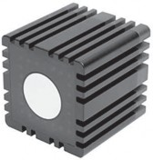
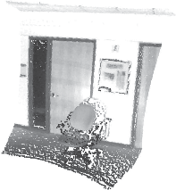
(a) (b)
Figure 26.3 (a) Time-of-flight camera; image courtesy of Mesa Imaging GmbH. (b) 3D
range image obtained with this camera. The range image makes it possible to detect obstacles
and objects in a robot’s vicinity. Image courtesy of Willow Garage, LLC.different viewpoints, analyzing the resulting parallax in these images to compute the range of
surrounding objects.For mobile ground robots, sonar and stereo vision are now rarely used, because they are
not reliably accurate. The Kinect is a popular low-cost sensor that combines a camera and astructured light projector, which projects a pattern of grid lines onto a scene. The camera Structured light
sees how the grid lines bend, giving the robot information about the shape of the objects in
the scene. If desired, the projection can be infrared light, so as not to interfere with other
sensors (such as human eyes).Most ground robots are now equipped with active optical range finders. Just like sonar
sensors, optical range sensors emit active signals (light) and measure the time until a reflectioncamera
of this signal arrives back at the sensor. Figure 26.3(a) shows a time-of-flight camera. This Time-of-flight
camera acquires range images like the one shown in Figure 26.3(b) at up to 60 frames per
second. Autonomous cars often use scanning lidars (short for light detection and ranging)— Scanning lidar
active sensors that emit laser beams and sense the reflected beam, giving range measurements
accurate to within a centimeter at a range of 100 meters. They use complex arrangements of
mirrors or rotating elements to sweep the beam across the environment and build a map.
Scanning lidars tend to work better than time-of-flight cameras at longer ranges, and tend to
perform better in bright daylight.Radar is often the range finding sensor of choice for air vehicles (autonomous or not). Radar
Radar sensors can measure distances up to kilometers, and have an advantage over optical
sensors in that they can see through fog. On the close end of range sensing are tactile sensors Tactile sensor
such as whiskers, bump panels, and touch-sensitive skin. These sensors measure range based
on physical contact, and can be deployed only for sensing objects very close to the robot.A second important class is location sensors. Most location sensors use range sensing Location sensor
System
as a primary component to determine location. Outdoors, the Global Positioning System Global Positioning
(GPS) is the most common solution to the localization problem. GPS measures the distance to
936 Chapter 26 Robotics
Differential GPS
Proprioceptive
sensorShaft decoder
Odometry
Inertial sensorForce sensor
satellites that emit pulsed signals. At present, there are 31 operational GPS satellites in orbit,
and 24 GLONASS satellites, the Russian counterpart. GPS receivers can recover the distance
to a satellite by analyzing phase shifts. By triangulating signals from multiple satellites, GPS
receivers can determine their absolute location on Earth to within a few meters. Differentialinvolves a second ground receiver with known location, providing millimeter accuracy
under ideal conditions.Unfortunately, GPS does not work indoors or underwater. Indoors, localization is often
achieved by attaching beacons in the environment at known locations. Many indoor environ-
ments are full of wireless base stations, which can help robots localize through the analysis of
the wireless signal. Underwater, active sonar beacons can provide a sense of location, using
sound to inform AUVs of their relative distances to those beacons.The third important class is proprioceptive sensors, which inform the robot of its own
motion. To measure the exact configuration of a robotic joint, motors are often equipped with
shaft decoders that accurately measure the angular motion of a shaft. On robot arms, shaft
decoders help track the position of joints. On mobile robots, shaft decoders report wheel rev-
olutions for odometry—the measurement of distance traveled. Unfortunately, wheels tend to
drift and slip, so odometry is accurate only over short distances. External forces, such as wind
and ocean currents, increase positional uncertainty. Inertial sensors, such as gyroscopes, re-
duce uncertainty by relying on the resistance of mass to the change of velocity.Other important aspects of robot state are measured by force sensors and torque sensors.
Torque sensor These are indispensable when robots handle fragile objects or objects whose exact size and
shape are unknown. Imagine a one-ton robotic manipulator screwing in a light bulb. It would
be all too easy to apply too much force and break the bulb. Force sensors allow the robot
to sense how hard it is gripping the bulb, and torque sensors allow it to sense how hard it is
turning. High-quality sensors can measure forces in all three translational and three rotational
directions. They do this at a frequency of several hundred times a second so that a robot can
quickly detect unexpected forces and correct its actions before it breaks a light bulb. However,
it can be a challenge to outfit a robot with high-end sensors and the computational power to
monitor them.Producing motion
Actuator
Hydraulic actuator
Pneumatic actuatorRevolute joint
Prismatic jointParallel jaw gripper
The mechanism that initiates the motion of an effector is called an actuator; examples include
transmissions, gears, cables, and linkages. The most common type of actuator is the electric, which uses electricity to spin up a motor. These are predominantly used in systems
that need rotational motion, like joints on a robot arm. Hydraulic actuators use pressurized
hydraulic fluid (like oil or water) and pneumatic actuators use compressed air to generate
mechanical motion.Actuators are often used to move joints, which connect rigid bodies (links). Arms and
legs have such joints. In revolute joints, one link rotates with respect to the other. In pris-, one link slides along the other. Both of these are single-axis joints (one axis
of motion). Other kinds of joints include spherical, cylindrical, and planar joints, which are
multi-axis joints.To interact with objects in the environment, robots use grippers. The most basic type
of gripper is the parallel jaw gripper, with two fingers and a single actuator that moves
the fingers together to grasp objects. This effector is both loved and hated for its simplicity.Section 26.3 What kind of problem is robotics solving? 937
Three-fingered grippers offer slightly more flexibility while maintaining simplicity. At the
other end of the spectrum are humanoid (anthropomorphic) hands. For instance, the Shadow
Dexterous Hand has a total of 20 actuators. This offers a lot more flexibility for complex
manipulation, including in-hand manipulator maneuvers (think of picking up your cell phone
and rotating it in-hand to orient it right-side up), but this flexibility comes at a price—learning
to control these complex grippers is more challenging.
What kind of problem is robotics solving?
Now that we know what the robot hardware might be, we’re ready to consider the agent
software that drives the hardware to achieve our goals. We first need to decide the computa-
tional framework for this agent. We have talked about search in deterministic environments,
MDPs for stochastic but fully observable environments, POMDPs for partial observability,
and games for situations in which the agent is not acting in isolation. Given a computational
framework, we need to instantiate its ingredients: reward or utility functions, states, actions,
observation spaces, etc.We have already noted that robotics problems are nondeterministic, partially observable,
and multiagent. Using the game-theoretic notions from Chapter 17, we can see that some-
times the agents are cooperative and sometimes they are competitive. In a narrow corridor
where only one agent can go first, a robot and a person collaborate because they both want
to make sure they don’t bump into each other. But in some cases they might compete a bit to
reach their destination quickly. If the robot is too polite and always makes room, it might get
stuck in crowded situations and never reach its goal.Therefore, when robots act in isolation and know their environment, the problem they
are solving can be formulated as an MDP; when they are missing information it becomes a
POMDP; and when they act around people it can often be formulated as a game.What is the robot’s reward function in this formulation? Usually the robot is acting in
service of a human—for example delivering a meal to a hospital patient for the patient’s
reward, not its own. For most robotics settings, even though robot designers might try to
specify a good enough proxy reward function, the true reward function lies with the user
whom the robot is supposed to help. The robot will either need to decipher the user’s desires,
or rely on an engineer to specify an approximation of the user’s desires.As for the robot’s action, state, and observation spaces, the most general form is that
observations are raw sensor feeds (e.g., the images coming in from cameras, or the laser hits
coming in from lidar); actions are raw electric currents being sent to the motors; and state is
what the robot needs to know for its decision making. This means there is a huge gap between
the low-level percepts and motor controls, and the high-level plans the robot needs to make.
To bridge the gap, roboticists decouple aspects of the problem to simplify it.For instance, we know that when we solve POMDPs properly, perception and action
interact: perception informs which actions make sense, but action also informs perception,
with agents taking actions to gather information when that information has value in later
time steps. However, robots often separate perception from action, consuming the outputs
of perception and pretending they will not get any more information in the future. Further,
hierarchical planning is called for, because a high-level goal like “get to the cafeteria” is far
removed from a motor command like “rotate the main axle 1 ◦,”938 Chapter 26 Robotics
Task planning
Control
Preference learning
People predictionIn robotics we often use a three-level hierarchy. The task planning level decides a plan
or policy for high-level actions, sometimes called action primitives or subgoals: move to the
door, open it, go to the elevator, press the button, etc. Then motion planning is in charge of
finding a path that gets the robot from one point to another, achieving each subgoal. Finally,
control is used to achieve the planned motion using the robot’s actuators. Since the task
planning level is typically defined over discrete states and actions, in this chapter we will
focus primarily on motion planning and control.Separately, preference learning is in charge of estimating an end user’s objective, and
people prediction is used to forecast the actions of other people in the robot’s environment.
All these combine to determine the robot’s behavior.Whenever we split a problem into separate pieces we reduce complexity, but we give up
opportunities for the pieces to help each other. Action can help improve perception, and also
determine what kind of perception is useful. Similarly, decisions at the motion level might
not be the best when accounting for how that motion will be tracked; or decisions at the task
level might render the task plan uninstantiatable at the motion level. So, with progress in
these separate areas comes the push to reintegrate them: to do motion planning and control
together, to do task and motion planning together, and to reintegrate perception, prediction,
and action—closing the feedback loop. Robotics today is about continuing progress in each
area while also building on this progress to achieve better integration.Robotic Perception
Perception is the process by which robots map sensor measurements into internal representa-
tions of the environment. Much of it uses the computer vision techniques from the previous
chapter. But perception for robotics must deal with additional sensors like lidar and tactile
sensors.Perception is difficult because sensors are noisy and the environment is partially observ-
able, unpredictable, and often dynamic. In other words, robots have all the problems of state(or filtering) that we discussed in Section 14.2. As a rule of thumb, good internal
representations for robots have three properties:They contain enough information for the robot to make good decisions.
They are structured so that they can be updated efficiently.
They are natural in the sense that internal variables correspond to natural state variables
in the physical world.
In Chapter 14, we saw that Kalman filters, HMMs, and dynamic Bayes nets can represent the
transition and sensor models of a partially observable environment, and we described both
exact and approximate algorithms for updating the belief state—the posterior probability
distribution over the environment state variables. Several dynamic Bayes net models for
this process were shown in Chapter 14. For robotics problems, we include the robot’s own
past actions as observed variables in the model. Figure 26.4 shows the notation used in this
chapter: Xt is the state of the environment (including the robot) at time t, Zt is the observation
received at time t, and At is the action taken after the observation is received.We would like to compute the new belief state, P(Xt+1 | z1:t+1, a1:t), from the current
belief state, P(Xt | z1:t, a1:t−1), and the new observation zt+1. We did this in Section 14.2,Section 26.4 Robotic Perception 939
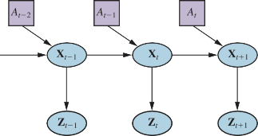
Figure 26.4 Robot perception can be viewed as temporal inference from sequences of ac-
tions and measurements, as illustrated by this dynamic decision network.but there are two differences here: we condition on the actions as well as the observations,
and we deal with continuous rather than discrete variables. Thus, we modify the recursive
filtering equation (14.5 on page 485) to use integration rather than summation:∫
P(Xt+1 | z1:t+1, a1:t )
= αP(zt+1 | Xt+1) P(Xt+1 | xt, at) P(xt | z1:t, a1:t−1) dxt . (26.1)
|
This equation states that the posterior over the state variables X at time t + 1 is calculated
recursively from the corresponding estimate one time step earlier. This calculation involves
the previous action at and the current sensor measurement zt+1. For example, if our goal is
to develop a soccer-playing robot, Xt+1 might include the location of the soccer ball relative
to the robot. The posterior P(Xt z1:t, a1:t−1) is a probability distribution over all states that
captures what we know from past sensor measurements and controls. Equation (26.1) tells us
how to recursively estimate this location, by incrementally folding in sensor measurements
(e.g., camera images) and robot motion commands. The probability P(Xt+1 | xt, at) is calledthe transition model or motion model, and P(zt+1 | Xt+1) is the sensor model. Motion model
Localization and mapping
Localization is the problem of finding out where things are—including the robot itself. To Localization
keep things simple, let us consider a mobile robot that moves slowly in a flat two-dimensional
world. Let us also assume the robot is given an exact map of the environment. (An example
of such a map appears in Figure 26.7.) The pose of such a mobile robot is defined by its
two Cartesian coordinates with values x and y and its heading with value θ, as illustrated in
Figure 26.5(a). If we arrange those three values in a vector, then any particular state is given
by Xt =(xt, yt, θt)T. So far so good.In the kinematic approximation, each action consists of the “instantaneous” specification
of two velocities—a translational velocity vt and a rotational velocity ωt. For small timeintervals ∆t, a crude deterministic model of the motion of such robots is given by
Xt+1 = f (Xt, vt, ωt) = Xt + vt∆t sin θt .
ˆ vt∆t cos θt
`˛a¸t x
ωt∆t
940 Chapter 26 Robotics
xi, yi
vt ¢t
u
t11
h(xt)
vt ¢t
x
t11
u
t
x
t
(a)
Z1 Z2 Z3
Z4
(b)
Figure 26.5 (a) A simplified kinematic model of a mobile robot. The robot is shown as a
circle with an interior radius line marking the forward direction. The state xt consists of the(xt, yt) position (shown implicitly) and the orientation θt. The new state xt+1 is obtained by
an update in position of vt∆t and in orientation of ωt∆t. Also shown is a landmark at (xi, yi)
observed at time t. (b) The range-scan sensor model. Two possible robot poses are shown fora given range scan (z1, z2, z3, z4). It is much more likely that the pose on the left generated
the range scan than the pose on the right.The notation Xˆ
refers to a deterministic state prediction. Of course, physical robots are
Landmark
somewhat unpredictable. This is commonly modeled by a Gaussian distribution with mean
f (Xt, vt, ωt) and covariance Σx. (See Appendix A for a mathematical definition.)
P(Xt+1 | Xt, vt, ωt) = N (Xˆ t+1, Σx) .
This probability distribution is the robot’s motion model. It models the effects of the motion
at on the location of the robot.
Next, we need a sensor model. We will consider two kinds of sensor models. The first
assumes that the sensors detect stable, recognizable features of the environment called land-. For each landmark, the range and bearing are reported. Suppose the robot’s state
is xt =(xt, yt, θt)T and it senses a landmark whose location is known to be (xi, yi)T. With-
out noise, a prediction of the range and bearing can be calculated by simple geometry (see
Figure 26.5(a)):zˆ = h(x ) = √(xt — xi)2 + (yt — yi)2 ! .
xi—xt
t t arctan yi—yt — θt
Sensor array
Again, noise distorts our measurements. To keep things simple, assume Gaussian noise with
covariance Σz, giving us the sensor modelP(zt | xt) = N (zˆt, Σz) .
A somewhat different sensor model is used for a sensor array of range sensors, each of
which has a fixed bearing relative to the robot. Such sensors produce a vector of range values
zt = (z1, . . . , zM)T.Given a pose xt, let zˆj be the computed range along the jth beam direction from xt to the
nearest obstacle. As before, this will be corrupted by Gaussian noise. Typically, we assumeSection 26.4 Robotic Perception 941
| |
function Monte-Carlo-Localizationa, z, N, P(X′ X , v, ω), P(z z∗), map
returns a set of samples, S, for the next time step
inputs: a, robot velocities v and ω
z, a vector of M range scan data points
|
P(X′ X , v, ω), motion model
|
P(z z∗), a range sensor noise model
map, a 2D map of the environment
persistent: S, a vector of N samples
local variables: W , a vector of N weights
S′, a temporary vector of N samples
if S is empty then
←
for i = 1 to N do // initialization phase
for
S[i] sample from P(X0)
← |
i = 1 to N do // update cycle
S′[i] sample from P(X′ X = S[i], v, ω)←
W [i] 1
for j = 1 to M do
z∗ ← RAYCAST( j, X = S′[i], map)
W [i] ←W [i] · P(zj| z∗)S← Weighted-Sample-With-Replacement(N, S′, W)
return S
Figure 26.6 A Monte Carlo localization algorithm using a range-scan sensor model with
independent noise.that the errors for the different beam directions are independent and identically distributed,
so we haveP(z
M
—(zj—zˆj)/2σ2
|
t xt) = α ∏ e .
j = 1
Figure 26.5(b) shows an example of a four-beam range scan and two possible robot poses,
one of which is reasonably likely to have produced the observed scan and one of which is not.
Comparing the range-scan model to the landmark model, we see that the range-scan model
has the advantage that there is no need to identify a landmark before the range scan can be
interpreted; indeed, in Figure 26.5(b), the robot faces a featureless wall. On the other hand,
if there are visible, identifiable landmarks, they may provide instant localization.|
Section 14.4 described the Kalman filter, which represents the belief state as a single
multivariate Gaussian, and the particle filter, which represents the belief state by a collection
of particles that correspond to states. Most modern localization algorithms use one of these
two representations of the robot’s belief P(Xt z1:t, a1:t—1).localization
Localization using particle filtering is called Monte Carlo localization, or MCL. The Monte Carlo
MCL algorithm is an instance of the particle-filtering algorithm of Figure 14.17 (page 510).
All we need to do is supply the appropriate motion model and sensor model. Figure 26.6
shows one version using the range-scan sensor model. The operation of the algorithm is
illustrated in Figure 26.7 as the robot finds out where it is inside an office building. In the first
image, the particles are uniformly distributed based on the prior, indicating global uncertainty942 Chapter 26 Robotics
Linearization
Taylor expansion
Simultaneous
localization andabout the robot’s position. In the second image, the first set of measurements arrives and the
particles form clusters in the areas of high posterior belief. In the third, enough measurements
are available to push all the particles to a single location.The Kalman filter is the other major way to localize. A Kalman filter represents the
|
posterior P(Xt z1:t, a1:t—1) by a Gaussian. The mean of this Gaussian will be denoted µt and
its covariance Σt. The main problem with Gaussian beliefs is that they are closed only under
linear motion models f and linear measurement models h. For nonlinear f or h, the result ofupdating a filter is in general not Gaussian. Thus, localization algorithms using the Kalman
filter linearize the motion and sensor models. Linearization is a local approximation of a
nonlinear function by a linear function. Figure 26.8 illustrates the concept of linearization
for a (one-dimensional) robot motion model. On the left, it depicts a nonlinear motion model
f (xt, at) (the control at is omitted in this graph since it plays no role in the linearization). On
the right, this function is approximated by a linear function f˜(xt, at). This linear function is
tangent to f at the point µt , the mean of our state estimate at time t. Such a linearization
is called first degree Taylor expansion. A Kalman filter that linearizes f and h via Taylor
expansion is called an extended Kalman filter (or EKF). Figure 26.9 shows a sequence of
estimates of a robot running an extended Kalman filter localization algorithm.As the robot moves, the uncertainty in its location estimate increases, as shown by the
error ellipses. Its error decreases as it senses the range and bearing to a landmark with known
location and increases again as the robot loses sight of the landmark. EKF algorithms work
well if landmarks are easily identified. Otherwise, the posterior distribution may be multi-
modal, as in Figure 26.7(b). The problem of needing to know the identity of landmarks is an
instance of the data association problem discussed in Figure 18.3.In some situations, no map of the environment is available. Then the robot will have to
acquire a map. This is a bit of a chicken-and-egg problem: the navigating robot will have to
determine its location relative to a map it doesn’t quite know, at the same time building this
map while it doesn’t quite know its actual location. This problem is important for many robot
applications, and it has been studied extensively under the name simultaneous localizationand mapping, abbreviated as SLAM.
mapping SLAM problems are solved using many different probabilistic techniques, including the
extended Kalman filter discussed above. Using the EKF is straightforward: just augment
the state vector to include the locations of the landmarks in the environment. Luckily, the
EKF update scales quadratically, so for small maps (e.g., a few hundred landmarks) the com-
putation is quite feasible. Richer maps are often obtained using graph relaxation methods,
similar to the Bayesian network inference techniques discussed in Chapter 13. Expectation–
maximization is also used for SLAM.Other types of perception
Not all of robot perception is about localization or mapping. Robots also perceive temper-
ature, odors, sound, and so on. Many of these quantities can be estimated using variants of
dynamic Bayes networks. All that is required for such estimators are conditional probability
distributions that characterize the evolution of state variables over time, and sensor models
that describe the relation of measurements to state variables.It is also possible to program a robot as a reactive agent, without explicitly reasoning
about probability distributions over states. We cover that approach in Section 26.9.1.Section 26.4 Robotic Perception 943

Robot position
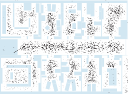
(a)
Robot position
(b)
Robot position
(c)
Figure 26.7 Monte Carlo localization, a particle filtering algorithm for mobile robot localiza-
tion. (a) Initial, global uncertainty. (b) Approximately bimodal uncertainty after navigating
in the (symmetric) corridor. (c) Unimodal uncertainty after entering a room and finding it to
be distinctive.944 Chapter 26 Robotics
Xt+1
f(Xt, at)
Xt+1
~
f(Xt, at) = f(μt, at) + Ft(Xt − μt)
f(X , a )
Σt+1 f(μt, at)
~
Σt+1 f( μt, at)
t t
Σt+1
(a)
μt Xt
Σt
(b)
μt Xt
Σt
Figure 26.8 One-dimensional illustration of a linearized motion model: (a) The function f ,
and the projection of a mean µt and a covariance interval (based on Σt) into time t + 1. (b)
The linearized version is the tangent of f at µt . The projection of the mean µt is correct.
However, the projected covariance Σ˜t+1 differs from Σt+1.robot
landmark
Figure 26.9 Localization using the extended Kalman filter. The robot moves on a straight
line. As it progresses, its uncertainty in its location estimate increases, as illustrated by the
error ellipses. When it observes a landmark with known position, the uncertainty is reduced.Low-dimensional
embeddingThe trend in robotics is clearly towards representations with well-defined semantics.
Probabilistic techniques outperform other approaches in many hard perceptual problems such
as localization and mapping. However, statistical techniques are sometimes too cumbersome,
and simpler solutions may be just as effective in practice. To help decide which approach to
take, experience working with real physical robots is your best teacher.Supervised and unsupervised learning in robot perception
Machine learning plays an important role in robot perception. This is particularly the case
when the best internal representation is not known. One common approach is to map high-
dimensional sensor streams into lower-dimensional spaces using unsupervised machine learn-
ing methods (see Chapter 19). Such an approach is called low-dimensional embedding.
Machine learning makes it possible to learn sensor and motion models from data, while si-
multaneously discovering a suitable internal representation.Another machine learning technique enables robots to continuously adapt to big changes
in sensor measurements. Picture yourself walking from a sunlit space into a dark room with
neon lights. Clearly, things are darker inside. But the change of light source also affects allSection 26.5 Planning and Control 945
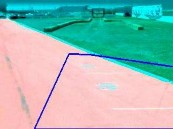
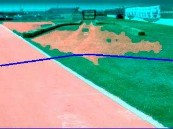
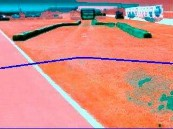
(a) (b) (c)
Figure 26.10 Sequence of “drivable surface” classifications using adaptive vision. (a) Only
the road is classified as drivable (pink area). The V-shaped blue line shows where the vehicle
is heading. (b) The vehicle is commanded to drive off the road, and the classifier is beginning
to classify some of the grass as drivable. (c) The vehicle has updated its model of drivable
surfaces to correspond to grass as well as road. Courtesy of Sebastian Thrun.the colors: neon light has a stronger component of green light than sunlight has. Yet somehow
we seem not to notice the change. If we walk together with people into a neon-lit room, we
don’t think that their faces suddenly turned green. Our perception quickly adapts to the new
lighting conditions, and our brain ignores the differences.Adaptive perception techniques enable robots to adjust to such changes. One example
is shown in Figure 26.10, taken from the autonomous driving domain. Here an unmanned
ground vehicle adapts its classifier of the concept “drivable surface.” How does this work?
The robot uses a laser to provide classification for a small area immediately in front of the
robot. When this area is found to be flat in the laser range scan, it is used as a positive training
example for the concept “drivable surface.” A mixture-of-Gaussians technique similar to the
EM algorithm discussed in Chapter 21 is then trained to recognize the specific color and
texture coefficients of the small sample patch. The images in Figure 26.10 are the result of
applying this classifier to the full image.Methods that make robots collect their own training data (with labels!) are called self-
learning
supervised. In this instance, the robot uses machine learning to leverage a short-range sensor Self-supervised
that works well for terrain classification into a sensor that can see much farther. That allows
the robot to drive faster, slowing down only when the sensor model says there is a change in
the terrain that needs to be examined more carefully by the short-range sensors.
Planning and Control
The robot’s deliberations ultimately come down to deciding how to move, from the abstract
task level all the way down to the currents that are sent to its motors. In this section, we
simplify by assuming that perception (and, where needed, prediction) are given, so the world
is observable. We further assume deterministic transitions (dynamics) of the world.We start by separating motion from control. We define a path as a sequence of points in Path
geometric space that a robot (or a robot part, such as an arm) will follow. This is related to
the notion of path in Chapter 3, but here we mean a sequence of points in space rather than a
sequence of discrete actions. The task of finding a good path is called motion planning.946 Chapter 26 Robotics
R
O
Cobs
y y
O
x x
Figure 26.11 A simple triangular robot that can translate, and needs to avoid a rectangular
obstacle. On the left is the workspace, on the right is the configuration space.Trajectory tracking
controlOnce we have a path, the task of executing a sequence of actions to follow the path is
called trajectory tracking control. A trajectory is a path that has a time associated withTrajectory each point on the path. A path just says “go from A to B to C, etc.” and a trajectory says
“start at A, take 1 second to get to B, and another 1.5 seconds to get to C, etc.”
Configuration space
R
—
O
Imagine a simple robot, , in the shape of a right triangle as shown by the lavender triangle in
the lower left corner of Figure 26.11. The robot needs to plan a path that avoids a rectangularWorkspace
Configuration space
obstacle, . The physical space that a robot moves about in is called the workspace. This
particular robot can move in any direction in the x y plane, but cannot rotate. The figure
shows five other possible positions of the robot with dashed outlines; these are each as close
to the obstacle as the robot can get.The body of the robot could be represented as a set of (x, y) points (or (x, y, z) points
for a three-dimensional robot), as could the obstacle. With this representation, avoiding the
obstacle means that no point on the robot overlaps any point on the obstacle. Motion planning
would require calculations on sets of points, which can be complicated and time-consuming.
We can simplify the calculations by using a representation scheme in which all the points
that comprise the robot are represented as a single point in an abstract multidimensional
space, which we call the configuration space, or C-space. The idea is that the set of pointsC-space that comprise the robot can be computed if we know (1) the basic measurements of the robot
(for our triangle robot, the length of the three sides will do) and (2) the current pose of the
robot—its position and orientation.For our simple triangular robot, two dimensions suffice for the C-space: if we know the
(x, y) coordinates of a specific point on the robot—we’ll use the right-angle vertex—then we
can calculate where every other point of the triangle is (because we know the size and shape of
the triangle and because the triangle cannot rotate). In the lower-left corner of Figure 26.11,
the lavender triangle can be represented by the configuration (0, 0).If we change the rules so that the robot can rotate, then we will need three dimensions,
(x, y, θ), to be able to calculate where every point is. Here θ is the robot’s angle of rotation
in the plane. If the robot also had the ability to stretch itself, growing uniformly by a scaling
factor s, then the C-space would have four dimensions, (x, y, θ, s).Section 26.5 Planning and Control 947
For now we’ll stick with the simple two-dimensional C-space of the non-rotating triangle
robot. The next task is to figure out where the points in the obstacle are in C-space. Consider
the five dashed-line triangles on the left of Figure 26.11 and notice where the right-angle
vertex is on each of these. Then imagine all the ways that the triangle could slide about.
Obviously, the right-angle vertex can’t go inside the obstacle, and neither can it get any
closer than it is on any of the five dashed-line triangles. So you can see that the area wherethe right-angle vertex can’t go—the C-space obstacle—is the five-sided polygon on the right C-space obstacle
C
of Figure 26.11 labeled obs
C
In everyday language we speak of there being multiple obstacles for the robot—a table, a
chair, some walls. But the math notation is a bit easier if we think of all of these as combining
into one “obstacle” that happens to have disconnected components. In general, the C-space
obstacle is the set of all points q in such that, if the robot were placed in that configuration,
its workspace geometry would intersect the workspace obstacle.Let the obstacles in the workspace be the set of points O, and let the set of all points on
the robot in configuration q be A(q). Then the C-space obstacle is defined asCobs = {q : q ∈ C andA(q) ∩O /= {}}
—
and the free space is Cfree = C Cobs. Free space
The C-space becomes more interesting for robots with moving parts. Consider the two-
link arm from Figure 26.12(a). It is bolted to a table so the base does not move, but the arm(DOF)
has two joints that move independently—we call these degrees of freedom (DOF). Moving Degrees of freedom
the joints alters the (x, y) coordinates of the elbow, the gripper, and every point on the arm.
The arm’s configuration space is two-dimensional: (θshou, θelb), where θshou is the angle of
the shoulder joint, and θelb is the angle of the elbow joint.Knowing the configuration for our two-link arm means we can determine where each
point on the arm is through simple trigonometry. In general, the forward kinematics map- Forward kinematics
ping is a function
φb : C → W
A [{ }
that takes in a configuration and outputs the location of a particular point b on the robot when
the robot is in that configuration. A particularly useful forward kinematics mapping is that for
the robot’s end effector, φEE . The set of all points on the robot in a particular configuration q
is denoted by A(q) ⊂ W :(q) = φb(q) .
b
The inverse problem, of mapping a desired location for a point on the robot to the config-
uration(s) the robot needs to be in for that to happen, is known as inverse kinematics: Inverse kinematics
IKb : x ∈ W '→ {q ∈ C s.t. φb(q) = x} .
Sometimes the inverse kinematics mapping might take not just a position, but also a desired
orientation as input. When we want a manipulator to grasp an object, for instance, we can
compute a desired position and orientation for its gripper, and use inverse kinematics to de-
termine a goal configuration for the robot. Then a planner needs to find a way to get the robot
from its current configuration to the goal configuration without intersecting obstacles.Workspace obstacles are often depicted as simple geometric forms—especially in robotics
textbooks, which tend to focus on polygonal obstacles. But how do the obstacles look in con-
figuration space?948 Chapter 26 Robotics
e
lb
shou
table
table
e
vertical
obstacleleft wall
ws
w
(a) (b)
Figure 26.12 (a) Workspace representation of a robot arm with two degrees of freedom. The
workspace is a box with a flat obstacle hanging from the ceiling. (b) Configuration space of
the same robot. Only white regions in the space are configurations that are free of collisions.
The dot in this diagram corresponds to the configuration of the robot shown on the left.For the two-link arm, simple obstacles in the workspace, like a vertical line, have very
complex C-space counterparts, as shown in Figure 26.12(b). The different shadings of the
occupied space correspond to the different objects in the robot’s workspace: the dark region
surrounding the entire free space corresponds to configurations in which the robot collides
with itself. It is easy to see that extreme values of the shoulder or elbow angles cause such a
violation. The two oval-shaped regions on both sides of the robot correspond to the table on
which the robot is mounted. The third oval region corresponds to the left wall.Finally, the most interesting object in configuration space is the vertical obstacle that
hangs from the ceiling and impedes the robot’s motions. This object has a funny shape in
configuration space: it is highly nonlinear and at places even concave. With a little bit of
imagination the reader will recognize the shape of the gripper at the upper left end.We encourage the reader to pause for a moment and study this diagram. The shape of this
obstacle in C-space is not at all obvious! The dot inside Figure 26.12(b) marks the configu-
ration of the robot in Figure 26.12(a). Figure 26.13 depicts three additional configurations,
both in workspace and in configuration space. In configuration conf-1, the gripper is grasping
the vertical obstacle.We see that even if the robot’s workspace is represented by flat polygons, the shape of
the free space can be very complicated. In practice, therefore, one usually probes a configu-
ration space instead of constructing it explicitly. A planner may generate a configuration and
then test to see if it is in free space by applying the robot kinematics and then checking for
collisions in workspace coordinates.Section 26.5 Planning and Control 949
conf-3
conf-1
conf-2
conf-2
conf-1
table
conf-3
table
left wall
we
vertical
obstaclews
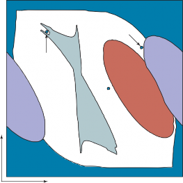
(a) (b)
Figure 26.13 Three robot configurations, shown in workspace and configuration space.
Motion planning
The motion planning problem is that of finding a plan that takes a robot from one configura- Motion planning
tion to another without colliding with an obstacle. It is a basic building block for movement
and manipulation. In Section 26.5.4 we will discuss how to do this under complicated dy-
namics, like steering a car that may drift off the path if you take a curve too fast. For now, we
will focus on the simple motion planning problem of finding a geometric path that is collision
free. Motion planning is a quintessentially continuous-state search problem, but it is often
possible to discretize the space and apply the search algorithms from Chapter 3.problem
The motion planning problem is sometimes referred to as the piano mover’s problem. It Piano mover’s
gets its name from a mover’s struggles with getting a large, irregular-shaped piano from one
room to another without hitting anything. We are given:a workspace world W in either R2 for the plane or R3 for three dimensions,
an obstacle region O ⊂ W ,
a robot with a configuration space C and set of points A(q) for q ∈ C,
a starting configuration qs ∈ C, and
a goal configuration qg ∈ C.
The obstacle region induces a C-space obstacle Cobs and its corresponding free space Cfree
defined as in the previous section. We need to find a continuous path through free space. We
will use a parameterized curve, τ (t), to represent the path, where τ (0) = qs and τ (1) = qg
and τ (t) for every t between 0 and 1 is some point in Cf ree. That is, t parameterizes how
far we are along the path, from start to goal. Note that t acts somewhat like time in that as
t increases the distance along the path increases, but t is always a point on the interval [0, 1]
and is not measured in seconds.950 Chapter 26 Robotics
qg
qs
Figure 26.14 A visibility graph. Lines connect every pair of vertices that can “see” each
other—lines that don’t go through an obstacle. The shortest path must lie upon these lines.The motion planning problem can be made more complex in various ways: defining the
goal as a set of possible configurations rather than a single configuration; defining the goal
in the workspace rather than the C-space; defining a cost function (e.g., path length) to be
minimized; satisfying constraints (e.g., if the path involves carrying a cup of coffee, making
sure that the cup is always oriented upright so the coffee does not spill).The spaces of motion planning: Let’s take a step back and make sure we understand the
spaces involved in motion planning. First, there is the workspace or world W . Points in W are
points in the everyday three-dimensional world. Next, we have the space of configurations,A
C. Points q in C are d-dimensional, with d the robot’s number of degrees of freedom, and
map to sets of points (q) in W . Finally, there is the space of paths. The space of paths is aspace of functions. Each point in this space maps to an entire curve through C-space. This
space is ∞-dimensional! Intuitively, we need d dimensions for each configuration along the
path, and there are as many configurations on a path as there are points in the number lineinterval [0, 1]. Now let’s consider some ways of solving the motion planning problem.
Visibility graph
Visibility graphs
∪{ }
⊂
For the simplified case of two-dimensional configuration spaces and polygonal C-space ob-
stacles, visibility graphs are a convenient way to solve the motion planning problem with a
guaranteed shortest-path solution. Let Vobs C be the set of vertices of the polygons making
up Cobs, and let V = Vobs qs, qg .∈
{ — ∈ } ∩ {}
We construct a graph G = (V, E) on the vertex set V with edges ei j E connecting a
vertex vi to another vertex v j if the line connecting the two vertices is collision-free—that is,
if λvi + (1 λ)vj : λ [0, 1] Cobs = . When this happens, we say the two vertices “can
see each other,” which is where “visibility” graphs got their name.To solve the motion planning problem, all we need to do is run a discrete graph search
(e.g., best-first search) on the graph G with starting state qs and goal qg. In Figure 26.14
we see a visibility graph and an optimal three-step solution. An optimal search on visibility
graphs will always give us the optimal path (if one exists), or report failure if no path exists.Voronoi diagrams
Visibility graphs encourage paths that run immediately adjacent to an obstacle—if you had to
walk around a table to get to the door, the shortest path would be to stick as close to the table
as possible. However, if motion or sensing is nondeterministic, that would put you at risk of
bumping into the table. One way to address this is to pretend that the robot’s body is a bitSection 26.5 Planning and Control 951
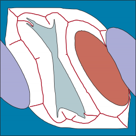
Figure 26.15 A Voronoi diagram showing the set of points (black lines) equidistant to two
or more obstacles in configuration space.larger than it actually is, providing a buffer zone. Another way is to accept that path length
is not the only metric we want to optimize. Section 26.8.2 shows how to learn a good metric
from human examples of behavior.A third way is to use a different technique, one that puts paths as far away from obstacles
as possible rather than hugging close to them. A Voronoi diagram is a representation that Voronoi diagram
allows us to do just that. To get an idea for what a Voronoi diagram does, consider a space
where the obstacles are, say, a dozen small points scattered about a plane. Now surround eachof the obstacle points with a region consisting of all the points in the plane that are closer to Region
that obstacle point than to any other obstacle point. Thus, the regions partition the plane. The
Voronoi diagram consists of the set of regions, and the Voronoi graph consists of the edges Voronoi graph
and vertices of the regions.
When obstacles are areas, not points, everything stays pretty much the same. Each region
still contains all the points that are closer to one obstacle than to any other, where distance is
measured to the closest point on an obstacle. The boundaries between regions still correspond
to points that are equidistant between two obstacles, but now the boundary may be a curve
rather than a straight line. Computing these boundaries can be prohibitively expensive in
high-dimensional spaces.To solve the motion planning problem, we connect the start point qs to the closest point
on the Voronoi graph via a straight line, and the same for the goal point qg. We then use
discrete graph search to find the shortest path on the graph. For problems like navigating
through corridors indoors, this gives a nice path that goes down the middle of the corridor.
However, in outdoor settings it can come up with inefficient paths, for example suggesting an
unnecessary 100 meter detour to stick to the middle of a wide-open 200-meter space.952 Chapter 26 Robotics
goal
start
goal
start
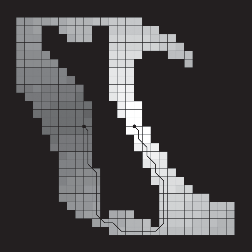


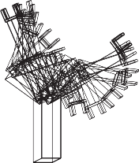
(a) (b)
Figure 26.16 (a) Value function and path found for a discrete grid cell approximation of the
configuration space. (b) The same path visualized in workspace coordinates. Notice how the
robot bends its elbow to avoid a collision with the vertical obstacle.Cell decomposition
Cell decomposition
An alternative approach to motion planning is to discretize the C-space. Cell decompositionmethods decompose the free space into a finite number of contiguous regions, called cells.
These cells are designed so that the path-planning problem within a single cell can be solved
by simple means (e.g., moving along a straight line). The path-planning problem then be-
comes a discrete graph search problem (as with visibility graphs and Voronoi graphs) to find
a path through a sequence of cells.The simplest cell decomposition consists of a regularly spaced grid. Figure 26.16(a)
shows a square grid decomposition of the space and a solution path that is optimal for this
grid size. Grayscale shading indicates the value of each free-space grid cell—the cost of
the shortest path from that cell to the goal. (These values can be computed by a deterministic
form of the VALUE-ITERATION algorithm given in Figure 16.6 on page 563.) Figure 26.16(b)
shows the corresponding workspace trajectory for the arm. Of course, we could also use the
A∗ algorithm to find a shortest path.This grid decomposition has the advantage that it is simple to implement, but it suffers
from three limitations. First, it is workable only for low-dimensional configuration spaces,
because the number of grid cells increases exponentially with d, the number of dimensions.
(Sounds familiar? This is the curse of dimensionality.) Second, paths through discretized
state space will not always be smooth. We see in Figure 26.16(a) that the diagonal parts of
the path are jagged and hence very difficult for the robot to follow accurately. The robot can
attempt to smooth out the solution path, but this is far from straightforward.Third, there is the problem of what to do with cells that are “mixed”—that is, neither
entirely within free space nor entirely within occupied space. A solution path that includesSection 26.5 Planning and Control 953
such a cell may not be a real solution, because there may be no way to safely cross the
cell. This would make the path planner unsound. On the other hand, if we insist that only
completely free cells may be used, the planner will be incomplete, because it might be the
case that the only paths to the goal go through mixed cells—it might be that a corridor is
actually wide enough for the robot to pass, but the corridor is covered only by mixed cells.The first approach to this problem is further subdivision of the mixed cells—perhaps
using cells of half the original size. This can be continued recursively until a path is found
that lies entirely within free cells. This method works well and is complete if there is a way to
decide if a given cell is a mixed cell, which is easy only if the configuration space boundaries
have relatively simple mathematical descriptions.It is important to note that cell decomposition does not necessarily require explicitly rep-
resenting the obstacle space Cobs. We can decide to include a cell or not by using a collisionchecker. This is a crucial notion to motion planning. A collision checker is a function γ(q) Collision checker
that maps to 1 if the configuration collides with an obstacle, and 0 otherwise. It is much easier
to check whether a specific configuration is in collision than to explicitly construct the entire
obstacle space Cobs.Examining the solution path shown in Figure 26.16(a), we can see an additional difficulty
that will have to be resolved. The path contains arbitrarily sharp corners, but a physical robot
has momentum and cannot change direction instantaneously. This problem can be solved by
storing, for each grid cell, the exact continuous state (position and velocity) that was attained
when the cell was reached in the search. Assume further that when propagating information
to nearby grid cells, we use this continuous state as a basis, and apply the continuous robot
motion model for jumping to nearby cells. So we don’t make an instantaneous 90◦ turn; we
make a rounded turn governed by the laws of motion. We can now guarantee that the resulting
trajectory is smooth and can indeed be executed by the robot. One algorithm that implementsthis is hybrid A∗. Hybrid A∗
Randomized motion planning
Randomized motion planning does graph search on a random decomposition of the configu-
ration space, rather than a regular cell decomposition. The key idea is to sample a random set
of points and to create edges between them if there is a very simple way to get from one to
the other (e.g., via a straight line) without colliding; then we can search on this graph.roadmap (PRM)
A probabilistic roadmap (PRM) algorithm is one way to leverage this idea. We assume Probabilistic
access to a collision checker γ (defined on page 953), and to a simple planner B(q1, q2) that Simple planner
returns a path from q1 to q2 (or failure) but does so quickly. This simple planner is not goingto be complete—it might return failure even if a solution actually exists. Its job is to quickly
try to connect q1 and q2 and let the main algorithm know if it succeeds. We will use it to
define whether an edge exists between two vertices.The algorithm starts by sampling M milestones—points in Cf ree—in addition to the Milestone
points qs and qg. It uses rejection sampling, where configurations are sampled randomly
and collision-checked using γ until a total of M milestones are found. Next, the algorithm
uses the simple planner to try to connect pairs of milestones. If the simple planner returns
success, then an edge between the pair is added to the graph; otherwise, the graph remains as
is. We try to connect each milestone either to its k nearest neighbors (we call this k-PRM), or
to all milestones in a sphere of a radius r. Finally, the algorithm searches for a path on this954 Chapter 26 Robotics
qg
qg
qs
qs
qg
qs
qg
qs
Figure 26.17 The probabilistic roadmap (PRM) algorithm. Top left: the start and goal con-
figurations. Top right: sample M collision-free milestones (here M = 5). Bottom left: con-
nect each milestone to its k nearest neighbors (here k = 3). Bottom right: find the shortest
path from the start to the goal on the resulting graph.Probabilistically
completeMulti-query planning
Rapidly exploring
random treesgraph from qs to qg. If no path is found, then M more milestones are sampled, added to the
graph, and the process is repeated.Figure 26.17 shows a roadmap with the path found between two configurations. PRMs
are not complete, but they are what is called probabilistically complete—they will eventu-
ally find a path, if one exists. Intuitively, this is because they keep sampling more milestones.
PRMs work well even in high-dimensional configuration spaces.PRMs are also popular for multi-query planning, in which we have multiple motion
planning problems within the same C-space. Often, once the robot reaches a goal, it is called
upon to reach another goal in the same workspace. PRMs are really useful, because the robot
can dedicate time up front to constructing a roadmap, and amortize the use of that roadmap
over multiple queries.Rapidly-exploring random trees
An extension of PRMs called rapidly exploring random trees (RRTs) is popular for single-
(RRTs) query planning. We incrementally build two trees, one with qs as the root and one with qg
as the root. Random milestones are chosen, and an attempt is made to connect each new
milestone to the existing trees. If a milestone connects both trees, that means a solution has
been found, as in Figure 26.18. If not, the algorithm finds the closest point in each tree and
adds to the tree a new edge that extends from the point by a distance δ towards the milestone.
This tends to grow the tree towards previously unexplored sections of the space.Roboticists love RRTs for their ease of use. However, RRT solutions are typically nonop-
timal and lack smoothness. Therefore, RRTs are often followed by a post-processing step.
The most common one is “short-cutting,” in which we randomly select one of the vertices on
the solution path and try to remove it by connecting its neighbors to each other (via the simpleSection 26.5 Planning and Control 955
qg
qs
qsample


Figure 26.18 The bidirectional RRT algorithm constructs two trees (one from the start, the
other from the goal) by incrementally connecting each sample to the closest node in each
tree, if the connection is possible. When a sample connects to both trees, that means we have
found a solution path.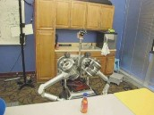
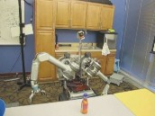
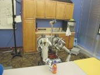
(a) (b) (c)
Figure 26.19 Snapshots of a trajectory produced by an RRT and post-processed with short-
cutting. Courtesy of Anca Dragan.planner). We do this repeatedly for as many steps as we have compute time for. Even then,
the trajectories might look a little unnatural due to the random positions of the milestone that
were selected, as shown in Figure 26.19.RRT∗ is a modification to RRT that makes the algorithm asymptotically optimal: the RRT∗
solution converges to the optimal solution as more and more milestones are sampled. The
key idea is to pick the nearest neighbor based on a notion of cost to come rather than distance
from the milestone only, and to rewire the tree, swapping parents of older vertices if it is
cheaper to reach them via the new milestone.Trajectory optimization for kinematic planning
Randomized sampling algorithms tend to first construct a complex but feasible path and then
optimize it. Trajectory optimization does the opposite: it starts with a simple but infeasible
path, and then works to push it out of collision. The goal is to find a path that optimizes a cost956 Chapter 26 Robotics
function1 over paths. That is, we want to minimize the cost function J(τ ), where τ (0) = qs
and τ (1) = qg.
J is called a functional because it is a function over functions. The argument to J is
τ , which is itself a function: τ (t) takes as input a point in the [0, 1] interval and maps it to
a configuration. A standard cost functional trades off between two important aspects of the
robot’s motion: collision avoidance and efficiency,J = Jobs + λJeff
where the efficiency Jeff measures the length of the path and may also measure smoothness. A
convenient way to define efficiency is with a quadratic: it integrates the squared first derivative
of τ (we will see in a bit why this does in fact incentivize short paths):

∈
eff =
0
2
τ ( )
.
J ∫ 1 1 ˙ s 2ds
Signed distance field
For the obstacle term, assume we can compute the distance d(x) from any point x W to
the nearest obstacle edge. This distance is positive outside of obstacles, 0 at the edge, and
negative inside. This is called a signed distance field. We can now define a cost field in the
workspace, call it c, that has high cost inside of obstacles, and a small cost right outside. With
this cost, we can make points in the workspace really hate being inside obstacles, and dislike
being right next to them (avoiding the visibility graph problem of their always hanging out
by the edges of obstacles). Of course, our robot is not a point in the workspace, so we have
some more work to do—we need to consider all points b on the robot’s body:J ∫ 1 ∫ c s
d s
 db ds
db dsb
obs =
0
(φb(τ ( )))

ds b
` ∈˛W¸ x
φ (τ ( )) .
` ∈˛W¸ x
Path integral
This is called a path integral—it does not just integrate c along the way for each body point,
but it multiplies by the derivative to make the cost invariant to retiming of the path. Imagine a
robot sweeping through the cost field, accumulating cost as is moves. Regardless of how fast
or slow the arm moves through the field, it must accumulate the exact same cost.The simplest way to solve the optimization problem above and find a path is gradient. If you are wondering how to take gradients of functionals with respect to functions,
something called the calculus of variations is here to help. It is especially easy for functionals
of the form[τ ] =
0
( , τ ( ), τ ( ))
J ∫ 1 F s s ˙ s ds
Euler-Lagrange
equationwhich are integrals of functions that depend just on the parameter s, the value of the function
at s, and the derivative of the function at s. In such a case, the Euler-Lagrange equationsays that the gradient is∇ J(s) = ∂F (s) — d ∂F (s) .
τ ∂ τ (s) dt ∂ τ˙(s)
If we look closely at Jeff and Jobs, they both follow this pattern. In particular for Jeff , we have
F(s, τ (s), τ˙(s)) =
 τ˙(s)
τ˙(s)  2. To get a bit more comfortable with this, let’s compute the gradient
2. To get a bit more comfortable with this, let’s compute the gradient1 Roboticists like to minimize a cost function J, whereas in other parts of AI we try to maximize a utility function
U or a reward R.
Section 26.5 Planning and Control 957
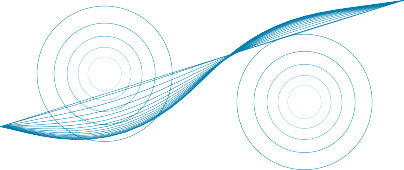
Figure 26.20 Trajectory optimization for motion planning. Two point-obstacles with circu-
lar bands of decreasing cost around them. The optimizer starts with the straight line trajectory,
and lets the obstacles bend the line away from collisions, finding the minimum path through
the cost field.for Jeff only. We see that F does not have a direct dependence on τ (s), so the first term in the
formula is 0. We are left with—
τ
∇ J(s) = 0 d τ˙(s)
dt
since the partial of F with respect to τ˙(s) is τ˙(s).
2
Notice how we made things easier for ourselves when defining Jeff —it’s a nice quadratic
of the derivative (and we even put a 1 in front so that the 2 nicely cancels out). In practice,
you will see this trick happen a lot for optimization—the art is not just in choosing how to
optimize the cost function, but also in choosing a cost function that will play nicely with how
you will optimize it. Simplifying our gradient, we get∇τ J(s) = —τ¨(s) .
·
Now, since Jeff is a quadratic, setting this gradient to 0 gives us the solution for τ if we
didn’t have to deal with obstacles. Integrating once, we get that the first derivative needs
to be constant; integrating again we get that τ (s) = a s + b, with a and b determined by
the endpoint constraints for τ (0) and τ (1). The optimal path with respect to Jeff is thus the
straight line from start to goal! It is indeed the most efficient way to go from one to the other
if there are no obstacles to worry about.Of course, the addition of Jobs is what makes things difficult—and we will spare you
deriving its gradient here. The robot would typically initialize its path to be a straight line,
which would plow right through some obstacles. It would then calculate the gradient of the
cost about the current path, and the gradient would serve to push the path away from the
obstacles (Figure 26.20). Keep in mind that gradient descent will only find a locally optimal
solution—just like hill climbing. Methods such as simulated annealing (Section 4.1.2) can be
used for exploration, to make it more likely that the local optimum is a good one.
Trajectory tracking control
We have covered how to plan motions, but not how to actually move—to apply current to
motors, to produce torque, to move the robot. This is the realm of control theory, a field Control theory
of increasing importance in AI. There are two main questions to deal with: how do we turn
958 Chapter 26 Robotics
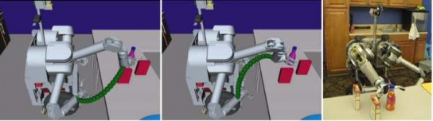
Figure 26.21 The task of reaching to grasp a bottle solved with a trajectory optimizer. Left:
the initial trajectory, plotted for the end effector. Middle: the final trajectory after optimiza-
tion. Right: the goal configuration. Courtesy of Anca Dragan. See Ratliff et al. (2009).Dynamics model
Dynamic state
Kinematic stateInverse dynamics
Retiming
a mathematical description of a path into a sequence of actions in the real world (open-loop
control), and how do we make sure that we are staying on track (closed-loop control)?From configurations to torques for open-loop tracking: Our path τ (t) gives us config-
urations. The robot starts at rest at qs = τ (0). From there the robot’s motors will turn currents
into torques, leading to motion. But what torques should the robot aim for, such that it ends
up at qg = τ (1)?This is where the idea of a dynamics model (or transition model) comes in. We can give
the robot a function f that computes the effects torques have on the configuration. Remem-
ber F = ma from physics? Well, there is something like that for torques too, in the form
u = f —1(q, q˙, q¨), with u a torque, q˙ a velocity, and q¨ an acceleration.2 If the robot is at config-
uration q and velocity q˙, and applied torque u, that would lead to acceleration q¨ = f (q, q˙, u).
The tuple (q, q˙) is a dynamic state, because it includes velocity, whereas q is the kinematicand is not sufficient for computing exactly what torque to apply. f is a deterministic
dynamics model in the MDP over dynamic states with torques as actions. f —1 is the inverse, telling us what torque to apply if we want a particular acceleration, which leads
to a change in velocity and thus a change in dynamic state.∈
Now, naively, we could think of t [0, 1] as “time” on a scale from 0 to 1 and select our
torque using inverse dynamics:u(t) = f —1(τ (t), τ˙(t), τ¨(t)) (26.2)
assuming that the robot starts at (τ (0), τ˙(0)). In reality though, things are not that easy.
The path τ was created as a sequence of points, without taking velocities and accelera-
tions into account. As such, the path may not satisfy τ˙(0) = 0 (the robot starts at 0 velocity),
or even that τ is differentiable (let alone twice differentiable). Further, the meaning of the
endpoint “1” is unclear: how many seconds does that map to?In practice, before we even think of tracking a reference path, we usually retime it, that
is, transform it into a trajectory ξ(t) that maps the interval [0, T ] for some time duration Tinto points in the configuration space C. (The symbol ξ is the Greek letter Xi.) Retiming is
trickier than you might think, but there are approximate ways to do it, for instance by picking
a maximum velocity and acceleration, and using a profile that accelerates to that maximum2 We omit the details of f —1 here, but they involve mass, inertia, gravity, and Coriolis and centrifugal forces.
Section 26.5 Planning and Control 959
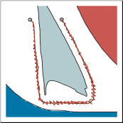
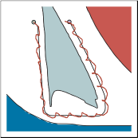
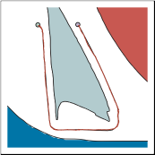
(a) (b) (c)
Figure 26.22 Robot arm control using (a) proportional control with gain factor 1.0, (b) pro-
portional control with gain factor 0.1, and (c) PD (proportional derivative) control with gain
factors 0.3 for the proportional component and 0.8 for the differential component. In all cases
the robot arm tries to follow the smooth line path, but in (a) and (b) deviates substantially from
the path.velocity, stays there as long as it can, and then decelerates back to 0. Assuming we can do
this, Equation (26.2) above can be rewritten asu(t) = f —1(ξ(t), ξ˙(t), ξ¨(t)) . (26.3)
Even with the change from τ to ξ, an actual trajectory, the equation of applying torques from
above (called a control law) has a problem in practice. Thinking back to the reinforcement Control law
learning section, you might guess what it is. The equation works great in the situation where
f is exact, but pesky reality gets in the way as usual: in real systems, we can’t measure masses
and inertias exactly, and f might not properly account for physical phenomena like stiction in Stiction
the motors (the friction that tends to prevent stationary surfaces from being set in motion—to
make them stick). So, when the robot arm starts applying those torques but f is wrong, the
errors accumulate and you deviate further and further from the reference path.Rather than just letting those errors accumulate, a robot can use a control process that
looks at where it thinks it is, compares that to where it wanted to be, and applies a torque to
minimize the error.A controller that provides force in negative proportion to the observed error is known as
a proportional controller or P controller for short. The equation for the force is: P controller
u(t) = KP(ξ(t) — qt)
where qt is the current configuration, and KP is a constant representing the gain factor of the Gain factor
controller. KP regulates how strongly the controller corrects for deviations between the actual
state qt and the desired state ξ(t).Figure 26.22(a) illustrates what can go wrong with proportional control. Whenever a de-
viation occurs—whether due to noise or to constraints on the forces the robot can apply—the
robot provides an opposing force whose magnitude is proportional to this deviation. Intu-
itively, this might appear plausible, since deviations should be compensated by a counterforce
to keep the robot on track. However, as Figure 26.22(a) illustrates, a proportional controller
can cause the robot to apply too much force, overshooting the desired path and zig-zagging960 Chapter 26 Robotics
Stable
Strictly stablePD controller
back and forth. This is the result of the natural inertia of the robot: once driven back to its
reference position the robot has a velocity that can’t instantaneously be stopped.In Figure 26.22(a), the parameter KP = 1. At first glance, one might think that choosing
a smaller value for KP would remedy the problem, giving the robot a gentler approach to
the desired path. Unfortunately, this is not the case. Figure 26.22(b) shows a trajectory for
KP = .1, still exhibiting oscillatory behavior. The lower value of the gain parameter helps, but
does not solve the problem. In fact, in the absence of friction, the P controller is essentially a
spring law; so it will oscillate indefinitely around a fixed target location.There are a number of controllers that are superior to the simple proportional control law.
A controller is said to be stable if small perturbations lead to a bounded error between the
robot and the reference signal. It is said to be strictly stable if it is able to return to and then
stay on its reference path upon such perturbations. Our P controller appears to be stable but
not strictly stable, since it fails to stay anywhere near its reference trajectory.The simplest controller that achieves strict stability in our domain is a PD controller.
The letter ‘P’ stands again for proportional, and ‘D’ stands for derivative. PD controllers are
described by the following equation:u(t) = KP(ξ(t) — qt) + KD(ξ˙(t) — q˙t) . (26.4)
—
As this equation suggests, PD controllers extend P controllers by a differential component,
which adds to the value of u(t) a term that is proportional to the first derivative of the error
ξ(t) qt over time. What is the effect of such a term? In general, a derivative term damp-
ens the system that is being controlled. To see this, consider a situation where the error is
changing rapidly over time, as is the case for our P controller above. The derivative of this
error will then counteract the proportional term, which will reduce the overall response to
the perturbation. However, if the same error persists and does not change, the derivative will
vanish and the proportional term dominates the choice of control.Figure 26.22(c) shows the result of applying this PD controller to our robot arm, using as
gain parameters KP = .3 and KD = .8. Clearly, the resulting path is much smoother, and does
not exhibit any obvious oscillations.∫
t) +
I
(ξ( )
s)
+
D(ξ( )
t) .
PD controllers do have failure modes, however. In particular, PD controllers may fail to
regulate an error down to zero, even in the absence of external perturbations. Often such a
situation is the result of a systematic external force that is not part of the model. For example,
an autonomous car driving on a banked surface may find itself systematically pulled to one
side. Wear and tear in robot arms causes similar systematic errors. In such situations, an
over-proportional feedback is required to drive the error closer to zero. The solution to this
problem lies in adding a third term to the control law, based on the integrated error over time:( ) =
P(ξ( )
u t K
t — q
K ∫ t
0
s — q ds K
˙ t — q˙
(26.5)
PID controller
Here KI is a third gain parameter. The term t(ξ(s) calculates the integral of the error over
time. The effect of this term is that long-lasting deviations between the reference signal and
the actual state are corrected. Integral terms, then, ensure that a controller does not exhibit
systematic long-term error, although they do pose a danger of oscillatory behavior.0
A controller with all three terms is called a PID controller (for proportional integral
derivative). PID controllers are widely used in industry, for a variety of control problems.
Think of the three terms as follows—proportional: try harder the farther away you are fromSection 26.5 Planning and Control 961
the path; derivative: try even harder if the error is increasing; integral: try harder if you
haven’t made progress for a long time.A middle ground between open-loop control based on inverse dynamics and closed-loop
control
PID control is called computed torque control. We compute the torque our model thinks we Computed torque
will need, but compensate for model inaccuracy with proportional error terms:
u(t) = f —1(ξ(t), ξ˙(t), ξ¨(t)) + m(ξ(t)) KP(ξ(t) — qt) + KD(ξ˙(t) — q˙t) . (26.6)
` feedf˛o¸rward x ` fee˛db¸ack x
The first term is called the feedforward component because it looks forward to where the Feedforward
component
component
robot needs to go and computes what torque might be required. The second is the feedbackbecause it feeds the current error in the dynamic state back into the control law. Feedback
m(q) is the inertia matrix at configuration q—unlike normal PD control, the gains change
with the configuration of the system.Plans versus policies
Let’s take a step back and make sure we understand the analogy between what happened so far
in this chapter and what we learned in the search, MDP, and reinforcement learning chapters.
With motion in robotics, we are really considering an underlying MDP where the states are
dynamic states (configuration and velocity), and the actions are control inputs, usually in
the form of torques. If you take another look at our control laws above, they are policies,
not plans—they tell the robot what action to take from any state it might reach. However,
they are usually far from optimal policies. Because the dynamic state is continuous and high
dimensional (as is the action space), optimal policies are computationally difficult to extract.Instead, what we did here is to break up the problem. We come up with a plan first, in
a simplified state and action space: we use only the kinematic state, and assume that states
are reachable from one another without paying attention to the underlying dynamics. This is
motion planning, and it gives us the reference path. If we knew the dynamics perfectly, we
could turn this into a plan for the original state and action space with Equation (26.3).But because our dynamics model is typically erroneous, we turn it instead into a policy
that tries to follow the plan—getting back to it when it drifts away. When doing this, we
introduce suboptimality in two ways: first by planning without considering dynamics, and
second by assuming that if we deviate from the plan, the optimal thing to do is to return to
the original plan. In what follows, we describe techniques that compute policies directly over
the dynamic state, avoiding the separation altogether.Optimal control